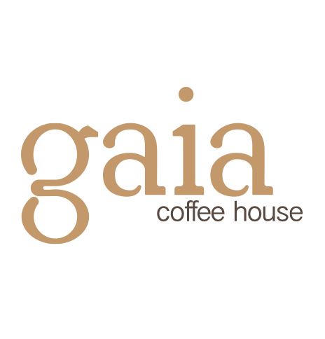

branding
gaia coffee house ( student project )

Gaia was chosen as the name for an organic coffee shop. Gaia meaning life in Greek. Element type face was designed for organic packaging giving it a airy natural feel, pared with Oriya Sangam MN a more simple font to add balance to the design.